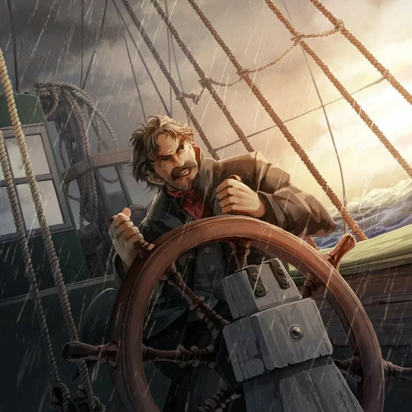
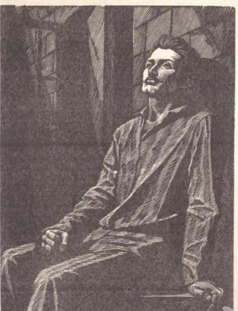
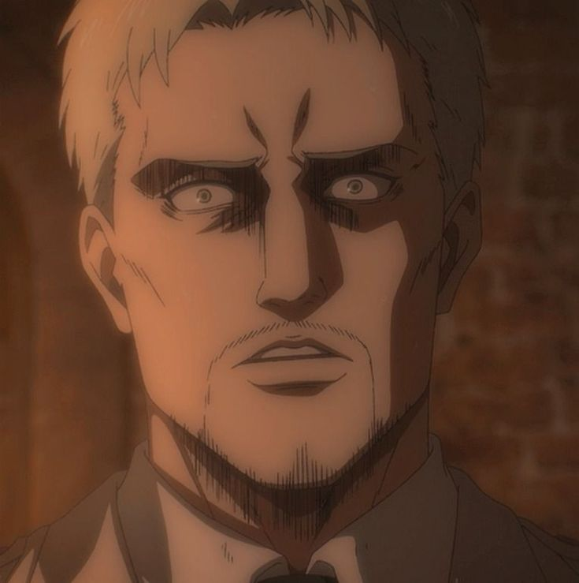
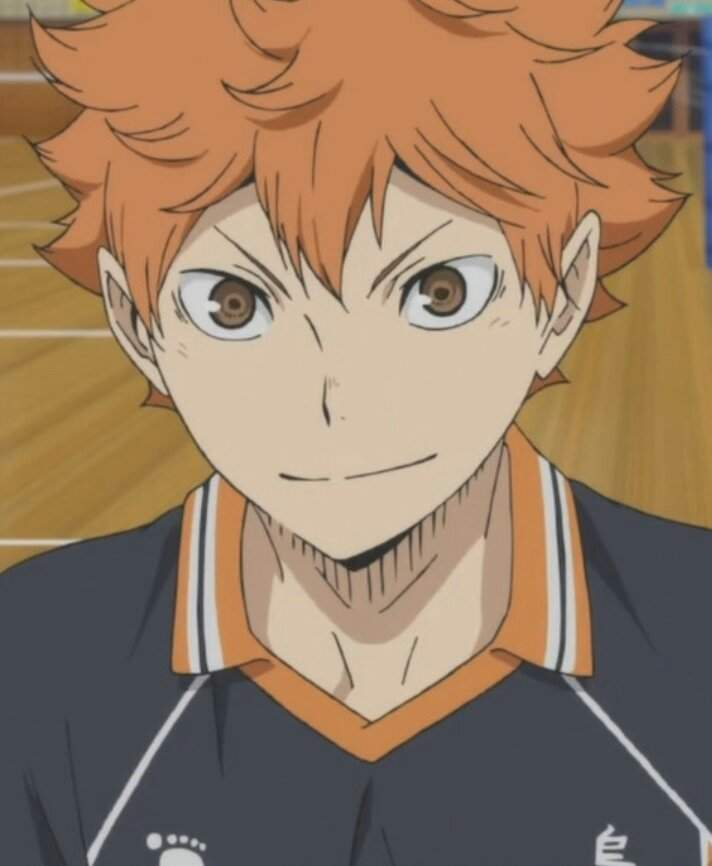

Наруто и его друзья
Самый объективный топ в Галактике Андромеда
фотография персонажа
из какого произведения
комментарий

Наруто
Минато такой персонаж, который просто обязан полюбиться зрителю. В аниме достаточно отлично
проработанных персонажей с крутой историей и философией, и по хорошему, можно было сделать такой
топ только по наруто, но Минато мне нравится своей простотой и естественностью ценностей,
базовый минимализм, база

"Морской волк" Джека Лондона
Очень противоречивый и интересный персонаж. Книга завоевала мой интерес только
благодаря разговорам с Ларсеном, а зачастую - его монологам. Описанный генезис персонажа
идеально укладывается в его жестокую и элитарную мировоззренческую картину, один из
лучших "героев" второго плана

Трилогия желания Теодора Драйзера
Персонаж списан с биографии реального финансиста из Филадельфии, который проделал путь
с самых низов до вершин, с вершин до адских глубин, а из адских глубин - снова вверх.
Произведения написано очень тягуче и само по себе не очень интересно. Но. Но. Этот персонаж -
наруто от мира литературы, его твердая воля и несгибаемый характер не раз помогли ему выбраться
из казалось бы самых безвыходных ситуаций. Реальный мужик

Атака титанов (больших)
Ну такого человечка нужно только наблюдать, бедолагу как персонажа ломали раз 10 об колено,
как бэйн бэтмена в Темном рыцаре. Но что-то всегда заставляло его идти, спойлерами наследить не
хочу, но просто напишу о том, что Райнер, по-моему, является одним из самых интересных персонажей
Атаки Титанов

Волейбол
Ну этот парень у меня связан с очень теплыми воспоминаниями. В школьное время мы много играли
в волейбол, на соревновательном уровне тоже. Тогда мы всей командой посмотрели аниме волейбол,
и каждому из нас нашлось прямо подходящее соответствие из аниме, а мой архитип, как оказалось,
один в один этот замечательный парень. И мотивировал он меня невероятно